Click on the Start free button.

Once registration is complete. You will need to log into the Azure portal to continue the demo setup process.
This demo should take about 6 minutes.
Introduction to Xamarin Test Cloud. Xamarin Test Cloud allows you to automate your app testing across 2,000 real devices in the cloud for both Android and iOS.
This demo will introduce creating, deploying and running UI tests with Xamarin Test Cloud.
Hyper-V enabled PC. Required for the Visual Studio UWP and Visual Studio Android emulators.
Internet connection to setup and run the demos.
Visual Studio 2015 or Community edition with Update 3 - Visual Studio 2015 Community edition is at https://www.visualstudio.com/vs/mobile-app-development/
Visual Studio Android emulator: https://www.visualstudio.com/vs/msft-android-emulator/
(Optional) Mac for compiling and running the iOS projects. Mac is also required to use the XCode designers within Visual Studio for PC or Mac.
If you encounter issues with connecting Visual Studio debugger with the Visual Studio I would recommend following the steps from this blog article: http://dotnetbyexample.blogspot.ca/2016/02/fix-for-could-not-connect-to-debugger.html
An active Azure subscription is also required to host both the data and images for the demo mobile app.
Click on the Start free button.
Once registration is complete. You will need to log into the Azure portal to continue the demo setup process.
Make sure to create your Azure account before the event.
If you have a business or Office365 email account – essentially not a Hotmail or gmail account - you can setup the Xamarin Test cloud trial account. Otherwise, you can show the video packaged with the demo, mute the sound and narrate what’s going on.
Setting up the demo takes a few minutes so make sure to create it before the presentation.
Setup instructions for both Visual Studio 2015 and Xamarin can be found at Microsoft Developer Network website: https://msdn.microsoft.com/en-us/library/mt613162.aspx
To Verify your Xamarin environment, Microsoft Developer Network has a guide walk through of the steps: https://msdn.microsoft.com/en-us/library/mt488769.aspx
If you already setup Azure and the Demo 1.1 assets into Azure storage then you can skip to Step 12 to copy the storage access information.
Create a resource group to organize and manage all the Azure services that will be used by the demo.
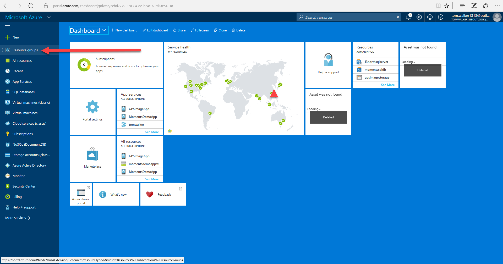
Click on the Add button and enter the name XamarinDemos for the new resource group. The name only needs to be unique within the same Azure subscription. First, open the resource group window (1). Next, click the Add button (2).
In the create resource group window, enter the name XamarinDemos (3). Next, make sure to set the resource group location to your closet region from the drop list (4). Last step, click the Create button to complete the creating the resource group (5)
Next, Add a new “Mobile Apps Quickstart” to the resource group created in previous step. Click on the Add button (1). Enter “Mobile Apps QuickStart” into the text search (2). Click on the Mobile Apps QuickStart (3). Finally click on the Create button (4)
At this step we need to name the new Mobile App service. The name has to be globally unique. For this setup process I’ve used the name “gpstagimagemobileapp” (1). TIP: to avoid Azure charges make sure to set the App Service plan to the free tier.
Click the App Service plan (2) and click the Create New button (3). Enter a name for the service plan. It must be unique with the Azure subscription (4). Click View All on the top right of the pricing tier list (5).
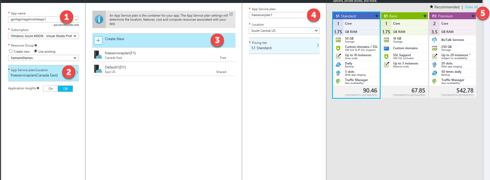
Scroll down to locate the F1 Free tier (6) and click select (7).
Next, we need to add (1) a ‘Storage account’ service (2) to our resource group. Make sure to select the Storage account with the category of ‘Storage’ (3).
Make sure to give the storage account a unique name. For this setup process I’ve chosen gpstagimagestorage as the name (1). Also, make sure to select Locally-redundant storage (LRS) (2) for the replication setting, and click Create (3).
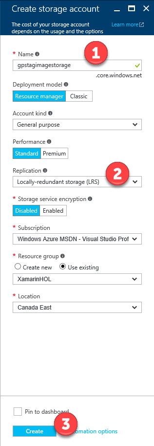
After the Azure setup process is complete for the storage account, click on Refresh in the XamarinDemos group to update the list of services (1).
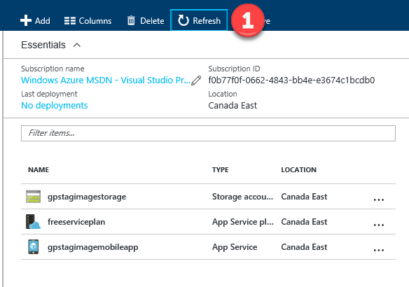
Select the storage account
Next, In the settings section select Access keys (1). Copy both the Storage account name (2) and the key 1 value (3). We will need both of these to complete the data setup for the demo.
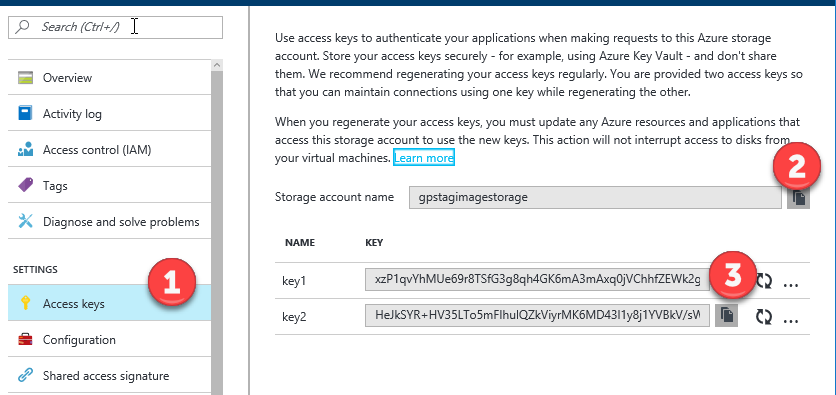
Go to the Solutions folder with this content, and locate the Demo1.4.zip file, extract it to a new folder under your Documents folder and locate the solution (.SLN) file.
Within the solution locate the project folder of SetupDemoData.
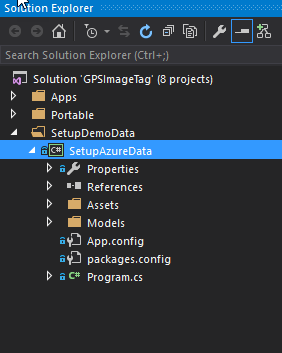
Within the SetupAzureData project, locate the file labelled App.config. Update the storage name and storage keys with the values that copied from the previous step.
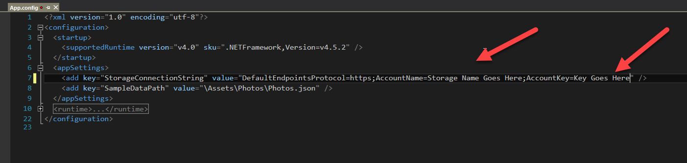
If you already setup Demo 1.1 and populated the Azure storage with content then you can skip to step 29.
Make sure to set the SetupAzureData as the starting project (1).
Now run the project, this will create the data and upload the photos to Azure
Once setup is complete, look under Containers for the Azure storage account (1) verify by checking that storage account has a new container labelled photos (2). Within the photos container you should see the images uploaded (3).
Within the Azure portal, navigate to the mobile app service.
Select the Mobile app service to bring up its settings panel (Azure blade).
Locate the option “Easy tables” (1) and click on the “Add from CSV” option (2).
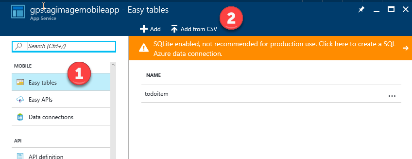
Locate the photo.csv file created by SetupAzureData console app (1). This will be located in your Documents folder. Then, click on the Start Upload button (2).
To verify that data has been uploaded, click on the new Photo table to see the data records.
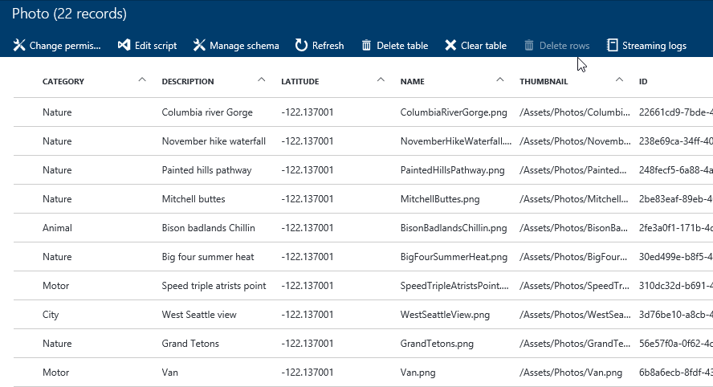
Next, we need to copy the mobile app url for the demo. This can be found in the Overview option (1). Just copy the URL for the mobile app service (2).
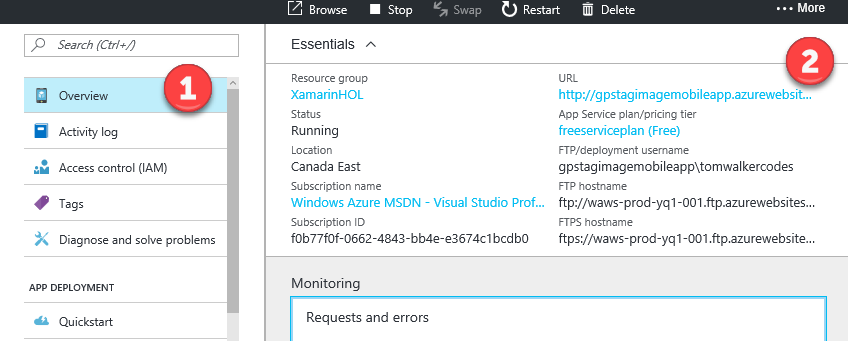
Now that we have the mobile app url we need to locate AzureServices.cs located in the GPSImageTag.Core project (1) and paste in the Url (2).
We will need to add the Azure Storage name and key to the into the Configuration.cs file located in the Apps-> UI-> GPSImageTag.Shared.Api Shared project
Verfiy the setup is complete, set the GPSImageTag.UWP project as the Startup Project (1).
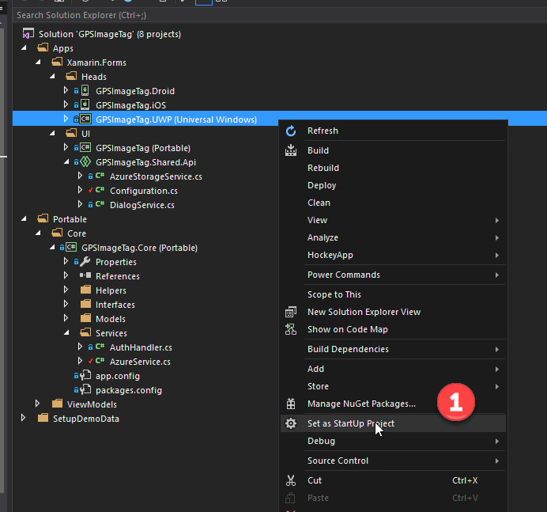
Press F5 to run the application.
Press the Sync Photos (1), you will see a list of images with title and description.
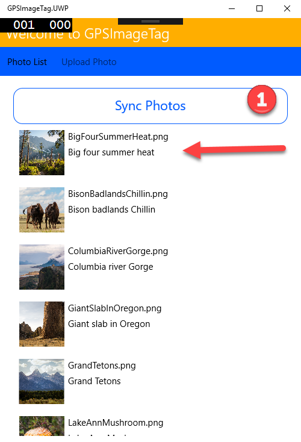
To register for Xamarin Test Cloud navigate to the following website url: https://www.xamarin.com/test-cloud . Click on the Start your fee trial (1).
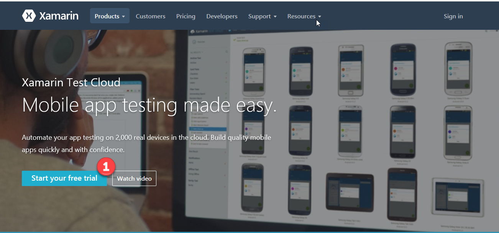
Locate the solution folder you extracted for Demo 1.4 under your Documents folder and open the SLN.
Locate the project UITests in the solution, open Tests.cs (1) and show the audience the UI test fixtures already defined in the project for the Android head.
The first test is called AppLaunches. This test takes a screen capture of the mobile app launching to the first screen.
The second test is called PerformSyncPhotos. This test will perform a button tap on the button labelled “Sync Photos”. It will query for the image name “BigFourSummerHeat.png” to load in the ListView. Next, it will take another screen capture. Finally, it will do an Assert test on the results of querying for the image name.
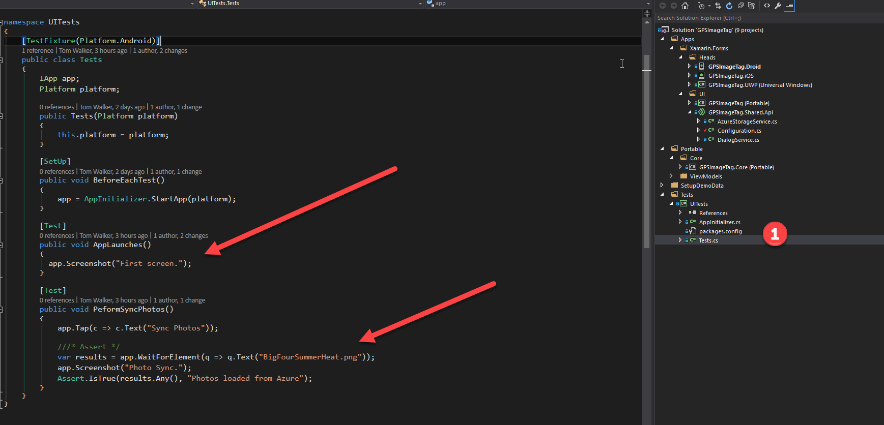
Locate the file AppInitializer.cs within the UITests project. (1)
This file is responsible for initializing the test harness and mapping the tests with the Android *.apk file. To generate this file you will need to deploy the app to an emulator or Android device.
Here we’ve mapped the test harness to the app’s *.apk located in the bin\release folder of the UITest project. To setup this up the file was copied ahead of time in the folder. Otherwise you will need to specify the path to the build *.apk from the Android project.
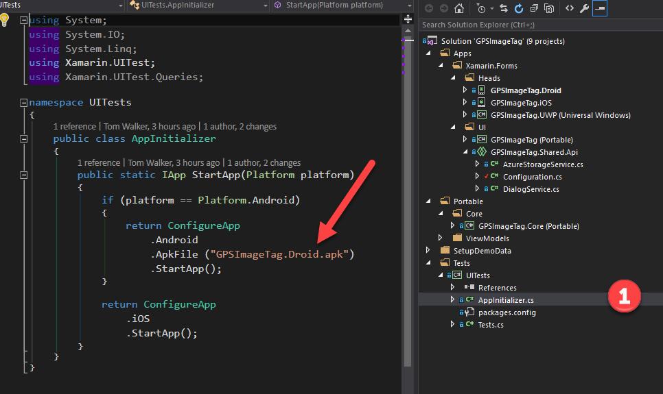
To run the tests locally first we need the Text Explorer window open - Test (1)-> Windows (2)-> Test Explorer (3)
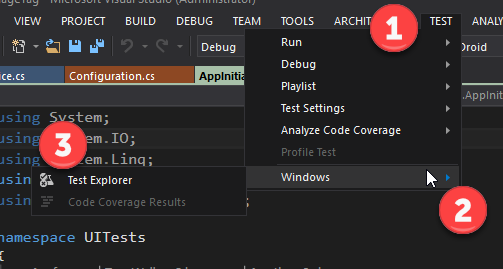
To run the tests make sure to set the Android project to release mode (1). Then, click on the Run All tests option in the Test Explorer section (2). The UITests will run the tests either in the emulator or an attached Android device.
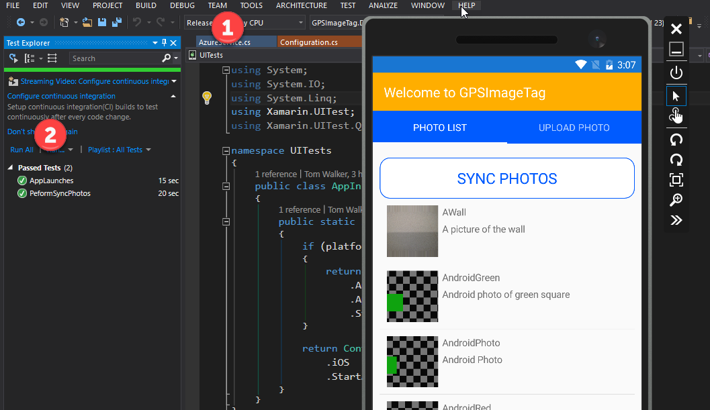
If you have access to Xamarin Test Cloud account, you can deploy the UITests. Right click on the UITests project and select Run in Test Cloud (1). This will start the process of uploading the tests and the Android Apk file.
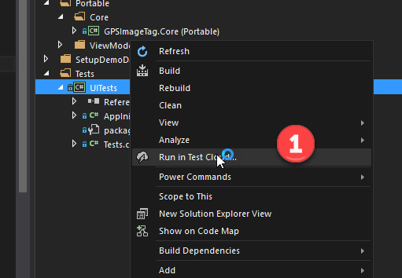
This is no prompt for this action but you will see status messages in Visual Studio’s output window. Once the process is done a pop window will appear and just press OK button (2).
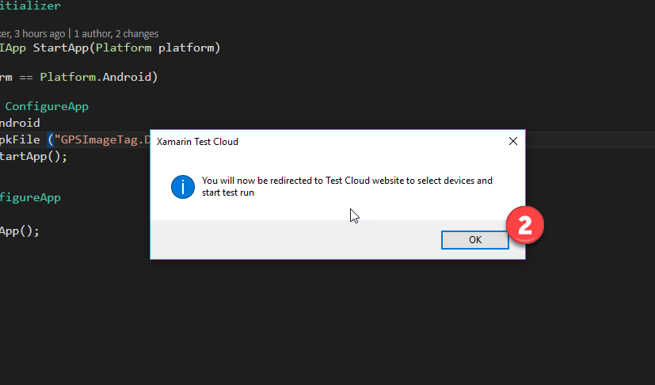
You will be redirected to the Xamarin Test Cloud web portal. Here you will need to select the devices to test against (1) then click Select x Devices (2)
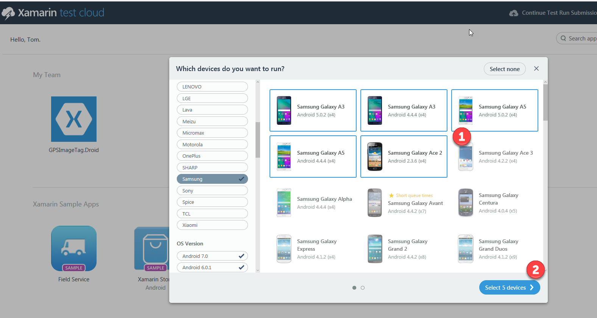
Accepted the default Test series of master (1) and click Done (2). This would normally be setup to match development branches i.e. (Master, Dev, QA, Release).
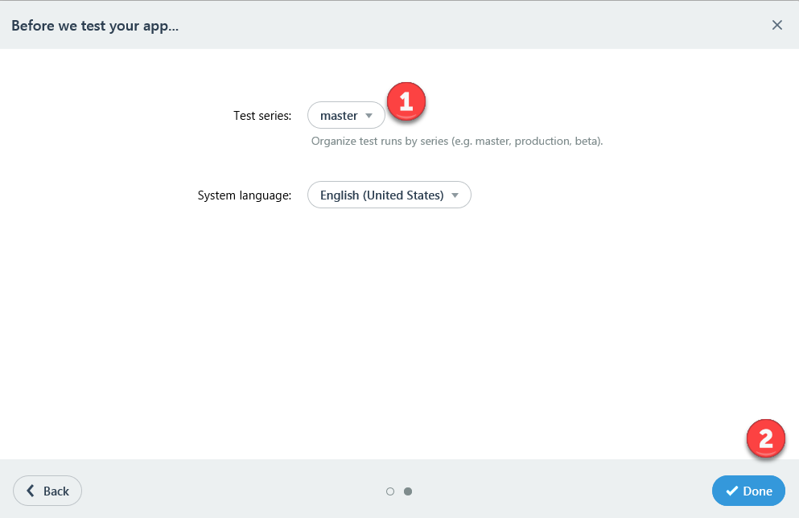
It will take some time for the tests to run. It’s recommend to have setup a test prior to the presentation of this demo. Once the tests are complete you can review the test run from the Xamarin Test Cloud dashboard (1).
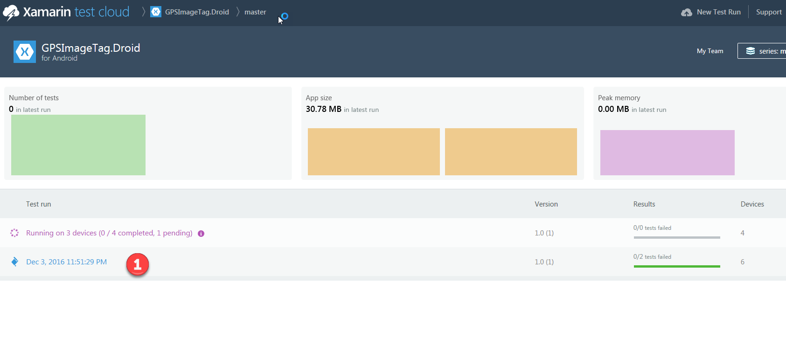
Review the test results from the dashboard (1). Explain what metrics are available in the dashboard. On this dashboard we can quickly see the number of successful tests and failed tests.
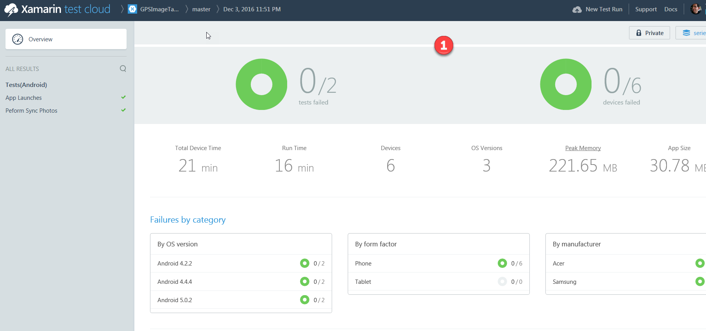
We can drill down into the individual details of each of the test fixtures.
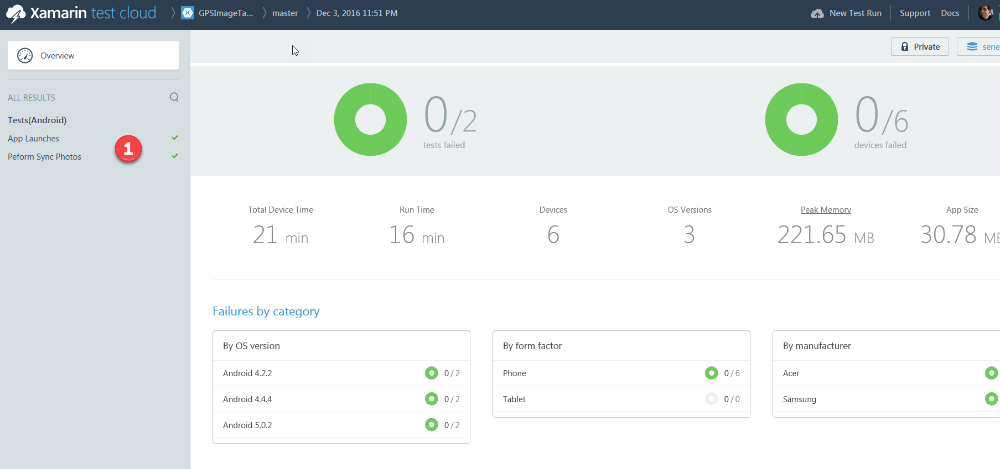
Here we can see the results of the screen captures form the test steps in selected test devices. This is a huge advantage to be able to automate tests across 2,000 devices. It would be extremely difficult and costly to replicate this level of testing.
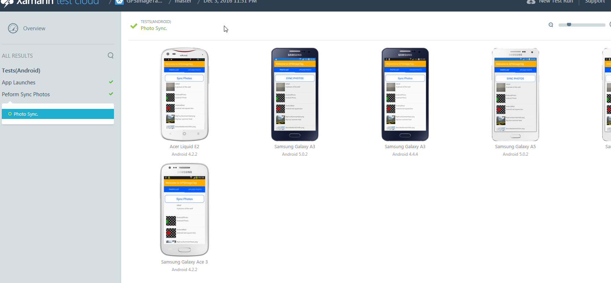
Give a summary of what was covered
Delete the Azure resource group to remove all the services used in this demo.
To delete the resource group from this demo, go into to the Resource group section within the Azure portal. Click on the ellipse (3 dots) button next to the resource group from this demo. Next, click on the delete action (1) in the menu.